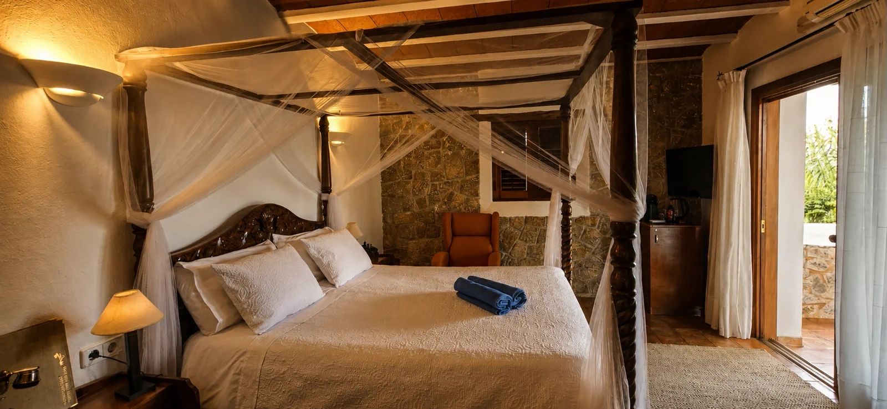
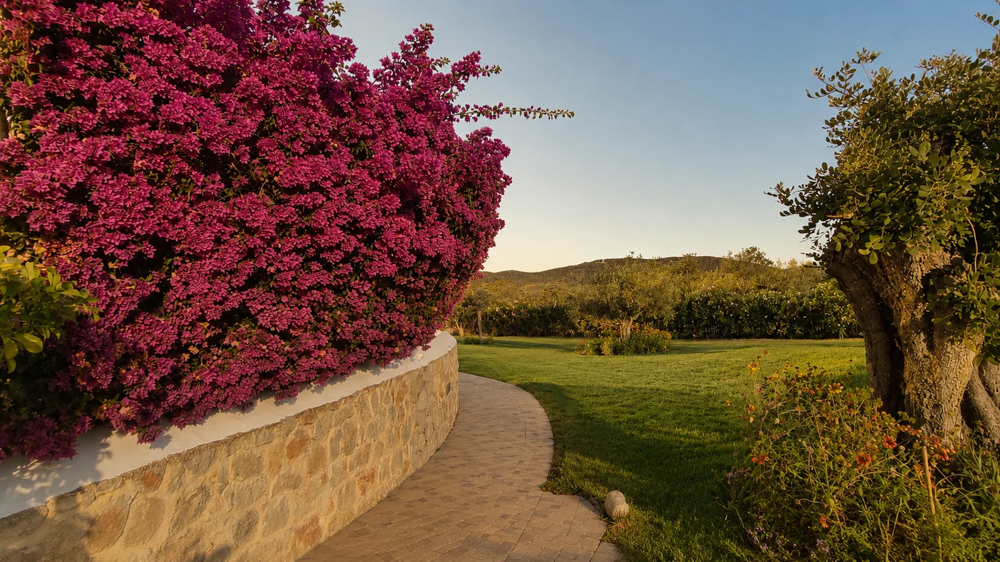
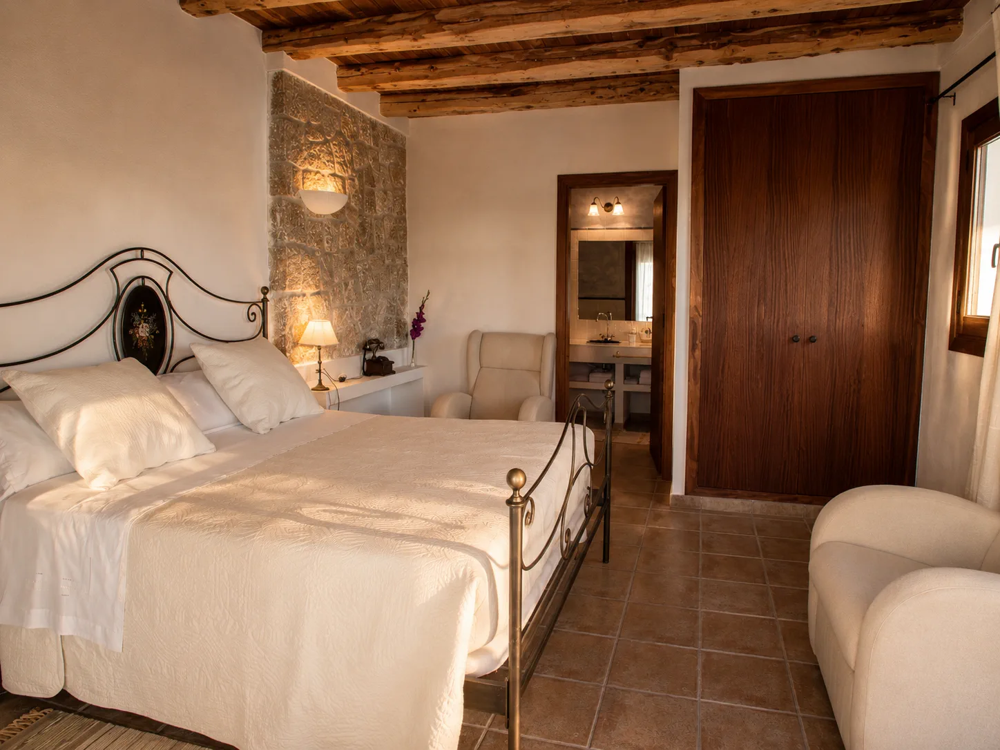
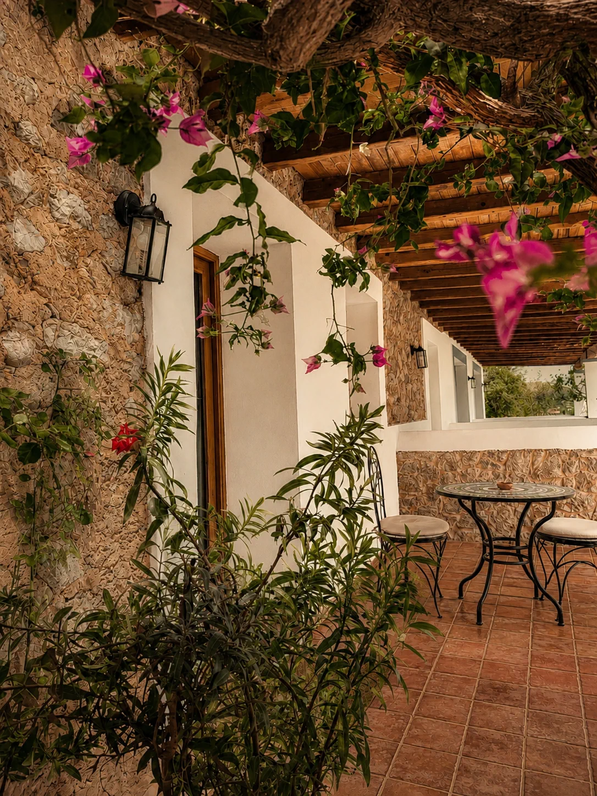
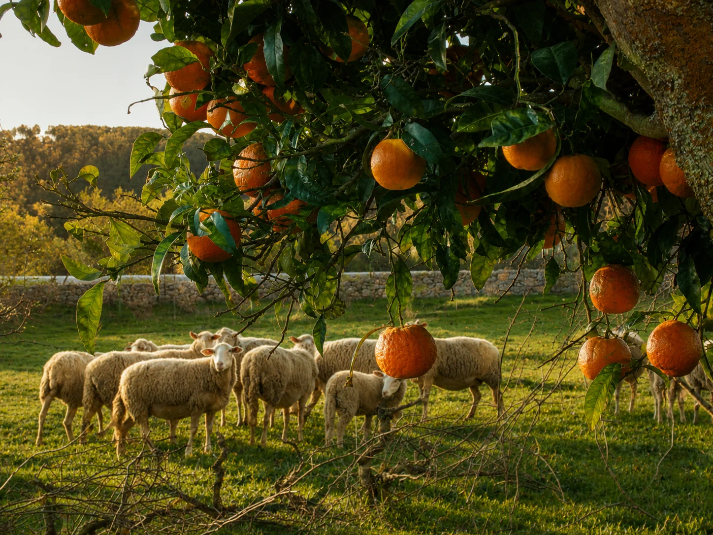
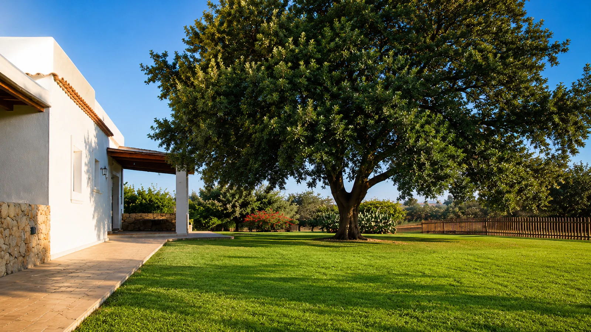
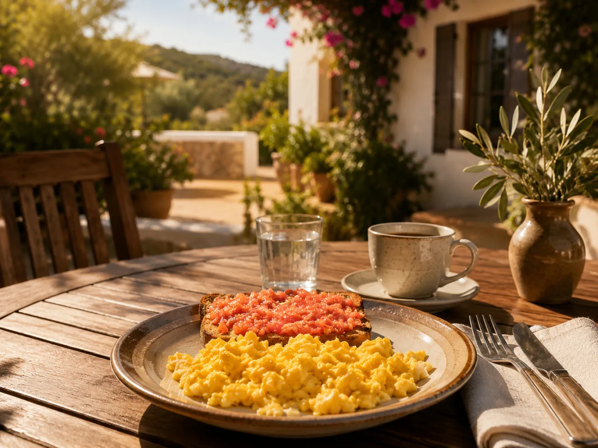

Un refugio donde el tiempo se detiene entre muros de piedra blanca y el aroma del pino mediterráneo.
Nuestro hotel rural es un contenedor vibratorio diseñado para la introspección. Restaurado con materiales nobles como el sabinar y la cal, respetando la arquitectura tradicional ibicenca.
Confort minimalista y lino orgánico.
Rincones para meditación silenciosa.







Un equipo humano, respetuoso y no invasivo para sostener tu proceso.
Fundadora y Guía
"Tu sistema nervioso necesita sentirse a salvo para soltar."
Movimiento Somático
"Escuchar al cuerpo es el primer paso para entender el alma."
Nutrición Consciente
"Cuidamos tu cuerpo con alimentos que son medicina y placer."
Grupo máx. 10
Hotel operativo
Programa claro
Guías visibles
Charla previa
Experiencia íntima
Escríbenos para resolver dudas o solicitar tu plaza. Te orientaremos personalmente antes de cualquier reserva.